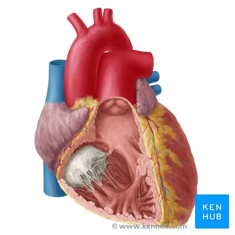
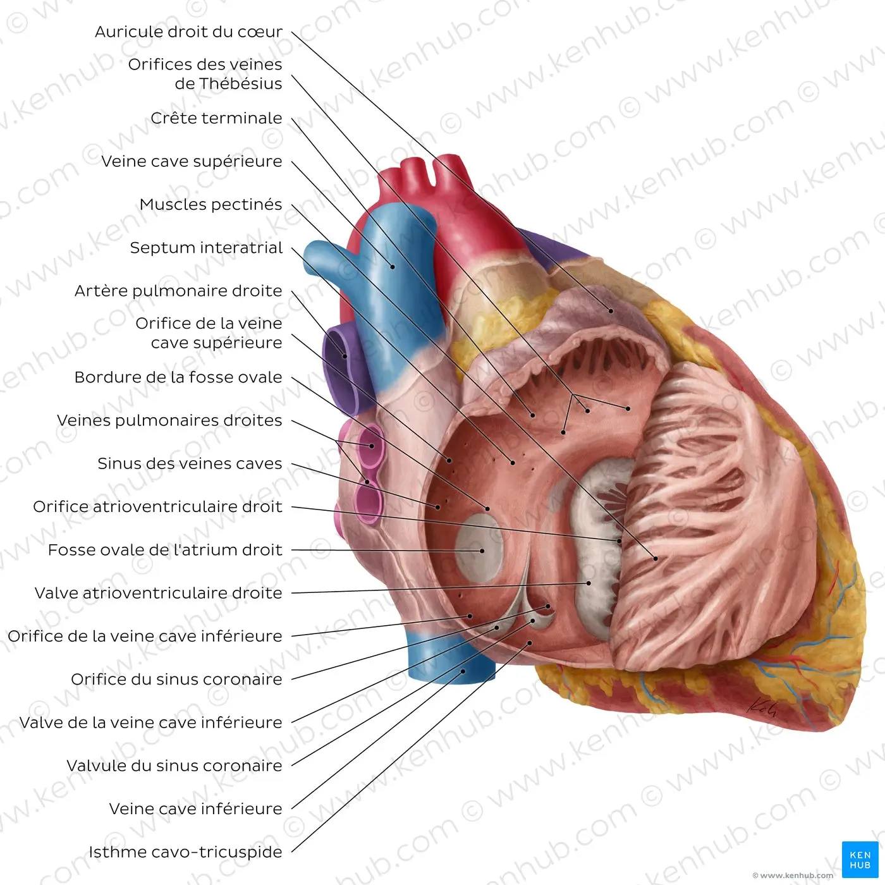
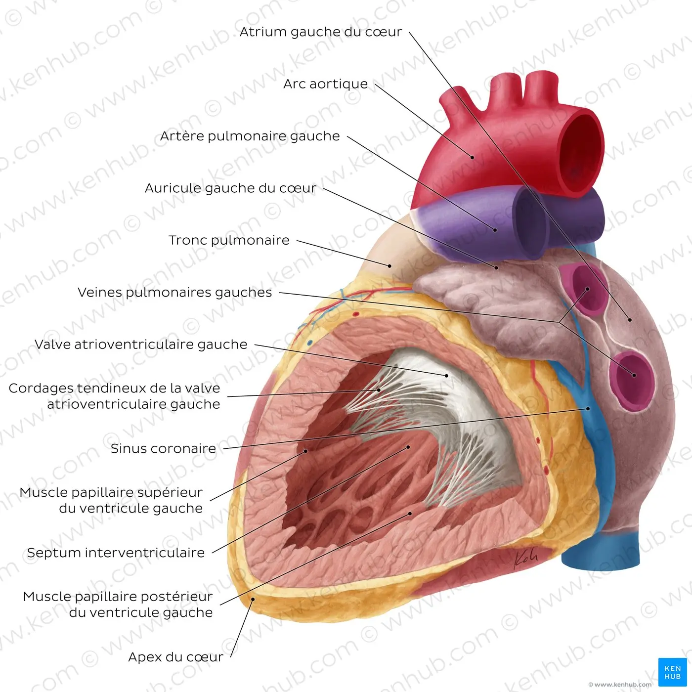
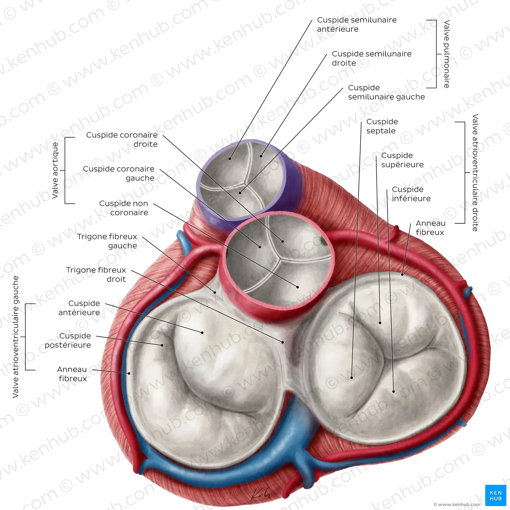
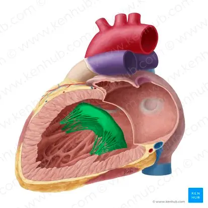
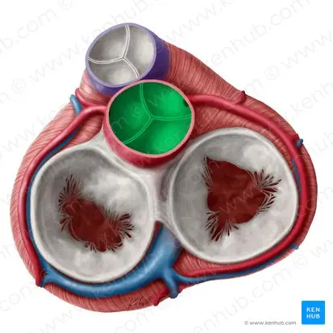

Cœur
Le cœur est un organe musculaire qui pompe le sang à travers le corps en le faisant circuler à travers le système circulatoire/vasculaire. Il se trouve au milieu du médiastin, enveloppé d’un sac séreux constitué de deux couches, appelé le péricarde. Le cœur est en forme de pyramide à base carrée orientée comme si elle était tombée sur l’une de ses faces, sa base faisant ainsi face à la paroi thoracique postérieure, et son sommet pointant vers la paroi thoracique antérieure.
Les grands vaisseaux provenant du cœur envoient des branches vers la tête et le cou, le thorax et l’abdomen, ainsi que les membres supérieurs et inférieurs.
Le cœur occupe une place assez spéciale dans les sciences anatomiques. Et pour cause, on peut vivre sans rate ou avec un seul rein, on peut même régénérer son foie - mais on ne peut pas vivre sans cœur.

Informations clés sur le cœur
| Informations | Détails |
|---|---|
| Limites |
Limites supérieure (atriums, auricules), inférieure (ventricules droit et gauche), gauche (auricule gauche, ventricule gauche), droite (atrium droit) |
| Faces |
Faces sternocostale (ventricule droit), diaphragmatique (surtout le ventricule droit, portion du ventricule gauche), pulmonaire (empreinte cardiaque du poumon) |
| Cavités |
Atriums/Oreillettes (gauche et droit), ventricules (gauche et droit) |
| Vaisseaux sortants / entrants |
Veines pulmonaires (→ atrium gauche), veines caves supérieure et inférieure (→ atrium droit), aorte (ventricule gauche →), artère pulmonaire (ventricule droit →) |
| Valves |
Valves tricuspide, pulmonaire, mitrale, aortique
Moyen mnémotechnique : Tu Peux M’Ausculter |
| Circulation du sang dans le cœur |
Artère coronaire droite : rameau du nœud sinoatrial, rameau marginal droit, rameau du nœud atrioventriculaire, rameau interventriculaire postérieur.
Artère coronaire gauche : artère circonflexe, artère interventriculaire antérieure. Sinus coronaire : grande veine cardiaque, veine cardiaque moyenne et petite veine cardiaque, veine marginale gauche, veines ventriculaires postérieures gauches. |
Cet article vous présentera l’anatomie du cœur.
Faces du cœur
Le cœur possède cinq faces : la face basale (ou postérieure), la face diaphragmatique (ou inférieure), la face sternocostale (ou antérieure) et les surfaces pulmonaires gauche et droite. Il a également plusieurs bords: droit, gauche, supérieur et inférieur:
- Le bord droit est une petite zone de l’oreillette droite qui s’étend de la veine cave supérieure à la veine cave inférieure.
- Le bord gauche est formé par le ventricule gauche et l’oreillette gauche.
- Le bord supérieur, sur le côté antérieur, est constitué des deux oreillettes et de leur auricule.
- Le bord inférieur est marqué par le ventricule droit.
À l'intérieur, le cœur est divisé en quatre chambres: deux oreillettes (droite et gauche) et deux ventricules (droit et gauche).

L’oreillette et le ventricule droits reçoivent le sang désoxygéné en provenance des veines systémiques et le pompent vers les poumons. De l’autre côté, l’oreillette et ventricule gauches reçoivent le sang oxygéné venant des poumons et le pompent à travers les vaisseaux systémiques, qui le distribuent à travers le corps

Les côtés gauche et droit du cœur sont séparés par les septums interauriculaire et interventriculaire qui existent en continuité l’un avec l’autre. De plus, les oreillettes sont séparées des ventricules par un septum atrioventriculaire. Le sang circule des oreillettes aux ventricules à travers les orifices atrioventriculaires (droit et gauche) -des ouvertures dans le septum atrioventriculaire. Ces ouvertures sont fermées et ouvertes périodiquement par les valves du cœur selon la phase du cycle cardiaque.
Bien qu’il existe beaucoup de structures sur le diagramme du cœur, ne vous inquiétez pas: nous les aborderons toutes dans ces articles et tutoriels vidéo. N’oubliez pas de jeter un coup d'œil à notre quiz sur l’anatomie du cœur, spécialement conçu pour vous aider à maîtriser l’anatomie cardiaque
Valves cardiaques
Les valves cardiaques séparent les oreillettes des ventricules, et les ventricules des gros vaisseaux. Ces valves comprennentdeux ou trois feuillets (ou “cuspides”) autour des orifices atrioventriculaires et racines des gros vaisseaux.

Les valves sont poussées ouvertes pour permettre la circulation du sang dans une direction, puis refermées pour sceller les orifices et empêcher le reflux sanguin. Le prolapsus des valves vers l’arrière est bloqué par les cordages tendineux -ou cordages du cœur- des cordes fibreuses qui connectent les muscles papillaires de la paroi du ventricule aux valves atrioventriculaires.
Il existe deux groupes de valves: atrioventriculaire et semilunaire. Les valves atrioventriculaires empêchent le reflux sanguin des ventricules aux oreillettes:
La valve atrioventriculaire droite/valve tricuspide se trouve entre l’oreillette droite et le ventricule droit. Elle est composée de trois feuillets/cuspides: antérieur/antérosupérieur, septal et postérieur/inférieur. La valve atrioventriculaire gauche/valve bicuspide est aussi appelée la valve mitrale, puisqu’elle ne possède que deux cuspides et ressemble ainsi à une mitre. Elle est située entre l’oreillette gauche et le ventricule gauche et est formée de deux feuillets/cuspides: antérieur/aortique et postérieur/murale

La valve semilunaire pulmonaire se trouve entre le ventricule droit et l’orifice du tronc pulmonaire. Elle possède trois feuillets/cuspides: antérieur/non-adjacent, gauche/gauche adjacent, et droit/droit adjacent. La valve semiluniare aortique se situe entre le ventricule gauche et l’orifice de l’aorte. Elle est composée de trois feuillets/cuspides semilunaires: gauche/gauche coronaire, droit/droit coronaire, et postérieur/non coronaire.
En pratique clinique, les valves du cœur peuvent être auscultées, d’habitude en utilisant un stéthoscope. Pour ce faire, il faut bien maîtriser l’anatomie des surfaces de projection des bruits du cœur
